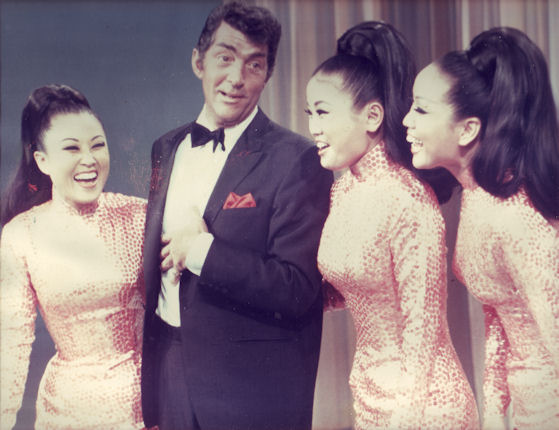

Here we will be looking at the History of kpop and where it all began from where it was to where it is today Kpop stems far back from generations to getnerations. It all started in 1950 with the Kim Sisters. The Kim Sisters were a three person girl group that achieved success by performing U.S pop songs and making it into their own. Even though they knew no English the were able to use whatever resources they had to become successful and once they branched out into the U.S their fame rapily increase. As they began to appear on different award shows and
 Here we will look at the biggest kpop of groups and there success in America. There are a few big kpop groups that are doing better in the US than some western artist themselves and this page will explain how they got where they are today and their rise to popularity